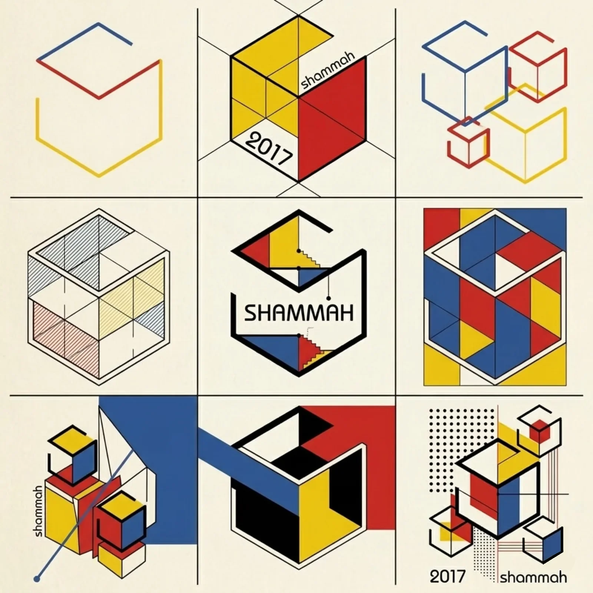
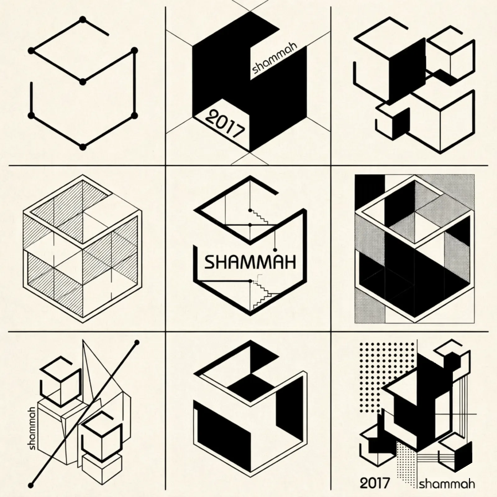
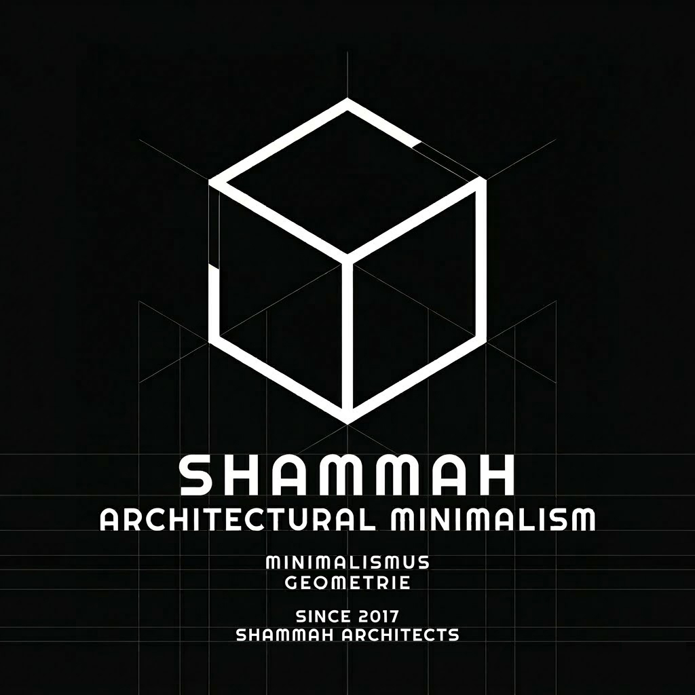
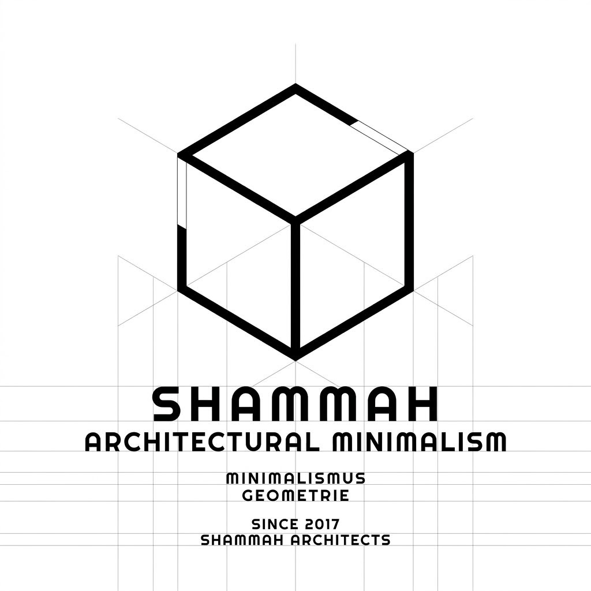

NEWS
| TITLE | CATEGORY | DATE |
|---|
ABOUT
SHAMMAH Architecture is an architectural practice that considers both the life of people and the order of space. We see architecture not as a simple formal outcome, but as the design of an environment where time and experience accumulate.
Our work spans a wide range of fields including residential, commercial, workplace, and cultural spaces, and begins with a careful reading of the context and conditions surrounding each project. By interpreting the character of the site, the surrounding environment, programmatic demands, and the movement and sensibility of users in an integrated way, we propose spaces that are clear and enduring.
We value balanced proportion, clear structure, and restrained detail over exaggerated gestures. Architecture, before it is an image, must be a real space where people actually stay, move, and live.
SHAMMAH Architecture works to reduce the gap between concept and practice, carrying each project forward with a consistent attitude from the initial idea to completion. We pursue careful and honest architecture by considering function and sensibility, economy and completeness, and both present needs and values that remain over time.

샴건축은 사람의 삶과 공간의 질서를 함께 고민하는 건축사사무소입니다. 우리는 건축을 단순한 형태의 결과물이 아니라, 시간과 경험이 축적되는 환경의 설계라고 생각합니다.
우리의 작업은 주거, 상업, 업무, 문화 공간 등 다양한 영역에 걸쳐 있으며, 각 프로젝트가 놓인 맥락과 조건을 면밀히 읽는 것에서 출발합니다. 대지의 성격, 주변 환경, 프로그램의 요구, 사용자의 움직임과 감각을 종합적으로 해석하여, 명확하고 오래 지속될 수 있는 공간을 제안합니다.
우리는 과장된 제스처보다 균형 있는 비례, 분명한 구조, 절제된 디테일을 중요하게 여깁니다. 건축은 눈에 보이는 이미지 이전에, 사람이 실제로 머무르고 사용하는 현실의 공간이어야 하기 때문입니다.
샴건축은 개념과 실무의 간극을 줄이며, 설계의 초기 아이디어부터 완성까지 일관된 태도로 프로젝트를 만들어갑니다. 기능과 감각, 경제성과 완성도, 현재의 요구와 시간이 지나도 남는 가치를 함께 고려하며, 신중하고 정직한 건축을 지향합니다.

CAREERS
1. Sham Architects welcomes applicants who wish to experience the full architectural process at close range and refine their own perspective and attitude through practice. From planning and design to coordination, site work, and final completion, we welcome those who seek to follow the full course through which a project takes shape as a built space, and to develop a broader and more comprehensive understanding of architecture through that experience.
2. We see architecture not as a fragmented outcome, but as a process shaped by diverse conditions, judgments, and accumulated time. For this reason, we value those who aim not merely to fulfill a given role, but to understand the broader context of a project and to learn by thinking actively within it. We hope to work with individuals who appreciate the value of collaboration, approach practice with a steady perspective and sincere attitude, and are willing to explore with us how architecture is realized within the realities of practice.
Requirements:
Please submit your CV and Portfolio in PDF format (under 20MB). We review applications on a rolling basis and will contact selected candidates for an interview.

하나. 샴건축은 건축이 만들어지는 전 과정을 가까이에서 경험하며, 실무를 통해 자신의 시각과 태도를 깊이 다듬어갈 인재를 기다립니다. 계획과 설계, 협의와 조율, 현장과 마무리의 단계에 이르기까지 하나의 프로젝트가 구체적인 공간으로 완성되어 가는 흐름을 함께 따라가며, 건축을 보다 넓고 입체적으로 이해하고자 하는 분들의 지원을 환영합니다.
둘. 우리는 건축을 단편적인 결과가 아니라 다양한 조건과 판단, 그리고 축적된 시간 속에서 형성되는 과정으로 바라봅니다. 따라서 주어진 역할만 수행하는 데 머무르기보다, 프로젝트 전반의 맥락을 이해하고 그 안에서 스스로 생각하며 배우려는 태도를 중요하게 생각합니다. 협업의 가치를 이해하고, 차분한 시선과 성실한 태도로 실무에 임하며, 건축이 현실 속에서 구현되는 과정을 함께 탐구해 나갈 분과 일하고자 합니다.
제출 서류:
이력서 및 포트폴리오를 PDF 형식으로 제출해 주시기 바랍니다 (20MB 미만). 지원서는 상시 검토하며, 인터뷰 대상자에 한해 개별 연락 드립니다.

Namdong-gu, Incheon, Korea
M. +82 070 7782 7898
F. +82 0504 431 9746